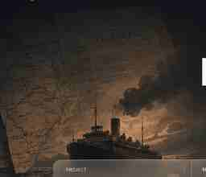
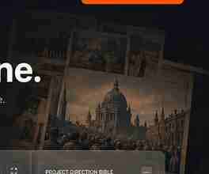

01 Setup
Establish time, place, and context. Introduce the world and the stakes.
Plan, generate, review, and finish long-form stories in one intelligent workspace.
Establish time, place, and context. Introduce the world and the stakes.

Bridge the turning point. Show the tension building and choices ahead.

Uncover the turning point. Introduce key figures and hidden forces.

Show the impact and legacy. Connect past to present implications.

Reflect on what remains. Look forward with understanding.

Bring your script and narration together in one place.
Shape scenes with pacing, shots, and narrative intent.
OctaScene creates scenes, shot concepts, and assets.
Review, refine, and export your production.